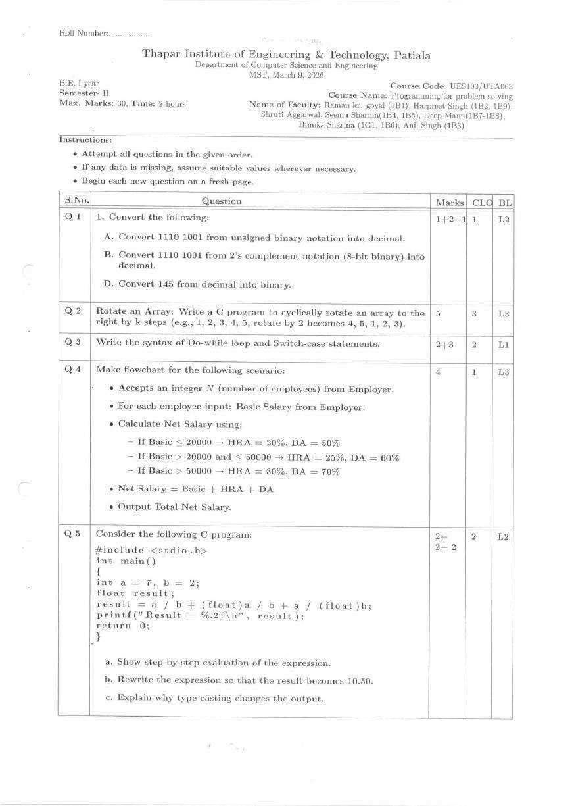
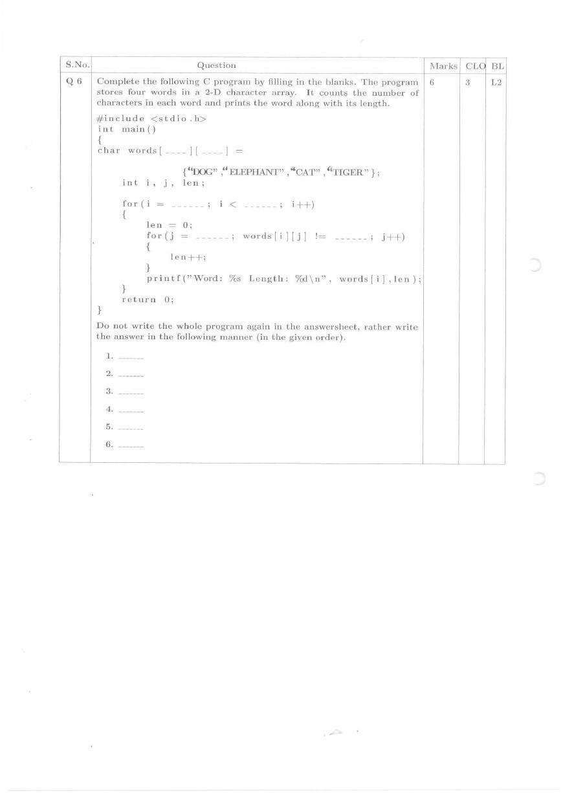
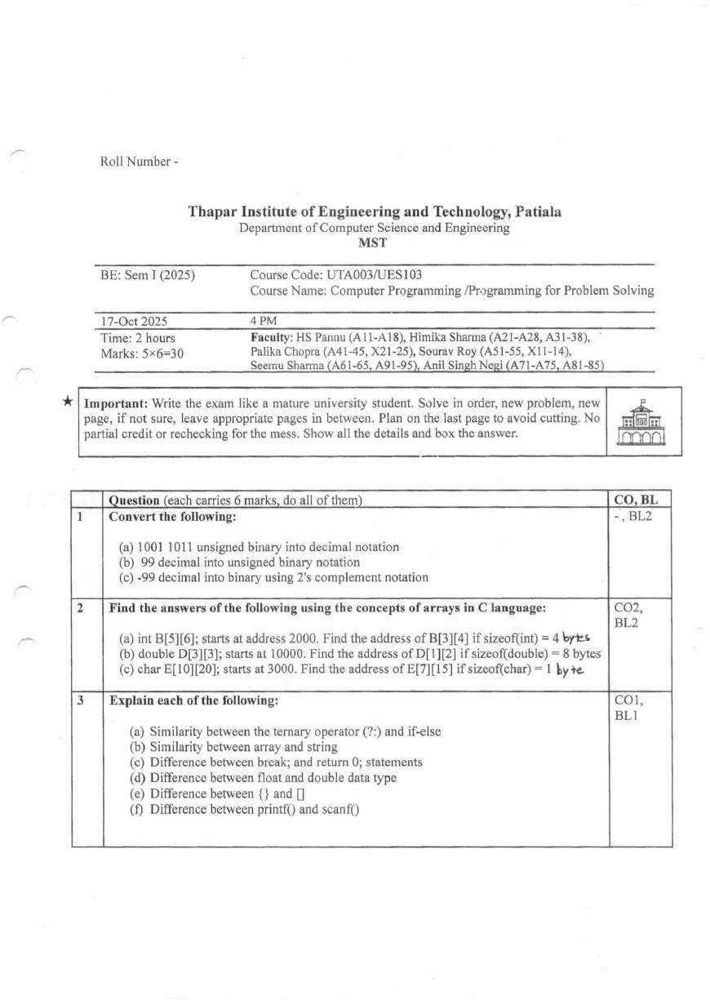
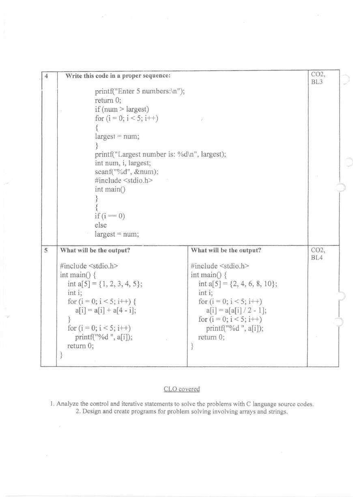
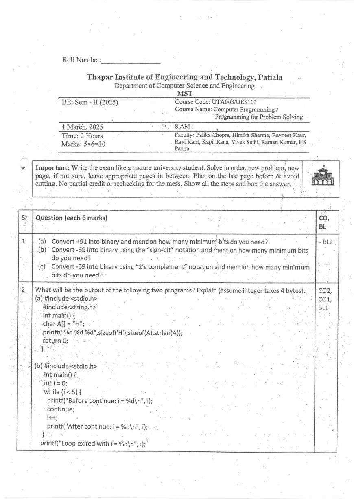
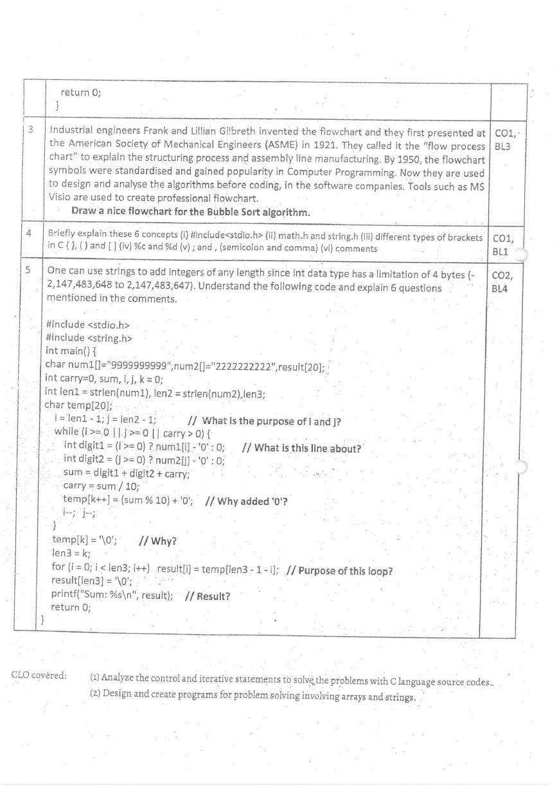
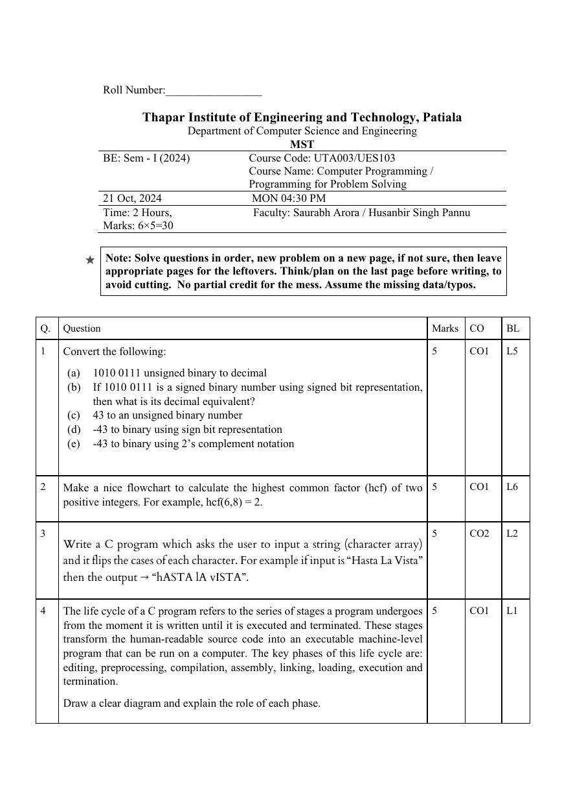
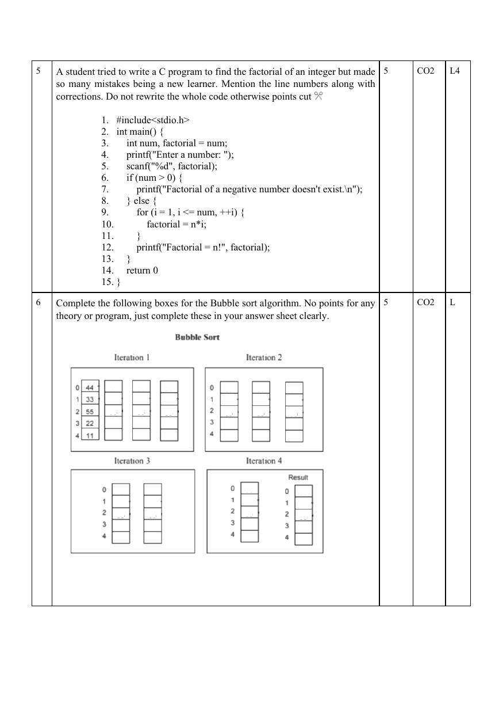
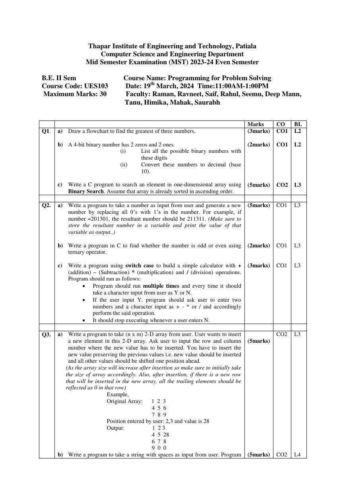
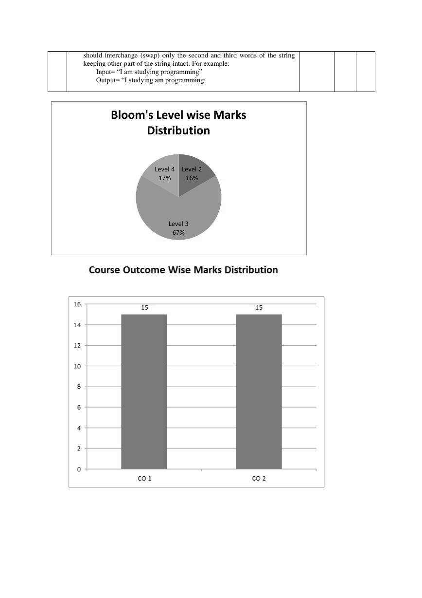

Built from five actual MST papers — March 2024, October 2024, March 2025, October 2025, and March 2026. Every number below is added up from the marks printed on those papers, and every code output was checked by running it.
This guide is made by a student, for students — free, no ads, and built by reading every past paper by hand. If it genuinely helps you, please take five seconds to vote and leave a line about what worked or what's missing. Your answer goes only to the student who made it, and it decides which subjects and guides get built next.
Every topic worth preparing, ranked by how reliably it has come up across the five papers. "Chance" here comes only from how often each topic appeared in past MSTs — it is not a guarantee about this year's paper.
'\0', flip the case of each character, swap words, sizeof vs strlen, 2-D character arrays, and adding numbers stored as strings.continue vs break, digit-by-digit number manipulation, the ternary operator, a switch-case menu, and the syntax of do-while and switch.Each paper on its own — what it covered, how it was built, and what was different about it. Newest first. All five are out of 30.
| Paper | Write a program | Read / trace code | Flowchart | Theory & conversions |
|---|---|---|---|---|
| Mar 2026 | 5 | 12 | 4 | 9 |
| Oct 2025 | — | 12 | — | 18 |
| Mar 2025 | — | 12 | 6 | 12 |
| Oct 2024 | 5 | 10 | 5 | 10 |
| Mar 2024 | 25 | — | 3 | 2 |
a / b + (float)a / b + a / (float)b step by step, then rewrite it so the result becomes 10.50.sizeof('H'), sizeof(A) and strlen(A), and a while loop where continue skips the increment.%c vs %d, semicolon vs comma, and comments.Every topic across all five papers at a glance. Each paper is out of 30.
| Topic | Mar 2024 /30 | Oct 2024 /30 | Mar 2025 /30 | Oct 2025 /30 | Mar 2026 /30 | Asked in |
|---|---|---|---|---|---|---|
| Number systems | 2 | 5 | 6 | 6 | 4 | 5/5 |
| Flowcharts | 3 | 5 | 6 | — | 4 | 4/5 |
| Arrays (1-D & 2-D) | 5 | — | — | 12 | 5 | 3/5 |
| Searching & sorting | 5 | 5 | — | — | — | 2/5 |
| Strings | 5 | 5 | 9 | — | 6 | 4/5 |
| Loops, conditions & switch | 10 | — | 3 | 6 | 5 | 4/5 |
| C basics, operators & type casting | — | 5 | 6 | 6 | 6 | 4/5 |
| Debugging | — | 5 | — | — | — | 1/5 |
Every topic, with the actual question asked in each paper it appeared in.
sizeof('H'), sizeof(A) and strlen(A) for char A[] = "H". Separately: explain six comments in a program that adds two 10-digit numbers stored as strings.continue comes before i++.a / b + (float)a / b + a / (float)b with a = 7, b = 2 step by step; rewrite it to give 10.50; explain why casting changes the result.{ vs (, printf vs scanf.#include<stdio.h>, math.h and string.h, the three types of brackets, %c and %d, semicolon and comma, and comments.int B[5][6] (base 2000), D[1][2] in double D[3][3] (base 10000), and E[7][15] in char E[10][20] (base 3000). Separately: predict the output of two programs that modify an array inside a loop.For C, the "formulas" are the rules and patterns these papers kept testing.
int B[5][6] at 2000 → 2000 + (3 × 6 + 4) × 4 = 2088.char A[] = "H": sizeof(A) = 2, strlen(A) = 1. In C, a character constant like 'H' is an int, so sizeof('H') = 4. The program prints 4 2 1.continue comes before i++, i never changes and the loop runs forever.break, execution falls through into the next case.Specific traps these five papers set — each one costs easy marks.
scanf("%d", factorial) should be scanf("%d", &num). Oct 2024int num, factorial = num; copies garbage — and a factorial must start at 1. Oct 2024for (i = 1, i <= num, ++i) must use semicolons. Oct 2024printf("Factorial = n!", factorial) never prints the value — it needs %d. Oct 2024i++, so it prints "Before continue: i = 0" forever — it's an infinite loop, and "Loop exited" never prints. Mar 2025a[i] = a[i] + a[4 − i], a[1] and a[0] have already changed by the time i = 3 and 4. The output is 6 6 6 10 11, not 6 6 6 6 6. Oct 2025a[i] = a[a[i]/2 − 1] on {2, 4, 6, 8, 10} copies each element onto itself — the output is 2 4 6 8 10. Trace, don't guess. Oct 2025All five papers as original scans, so every line of code is exactly as printed. Newest first. Try one as a timed 2-hour mock before looking at the analysis.
UES103/UTA003: Programming for Problem Solving · 30 marks · 2 hours


UTA003/UES103: Computer Programming / Programming for Problem Solving · 30 marks · 2 hours


UTA003/UES103: Computer Programming / Programming for Problem Solving · 30 marks · 2 hours


UTA003/UES103: Computer Programming / Programming for Problem Solving · 30 marks · 2 hours


UES103: Programming for Problem Solving · 30 marks · 2 hours

